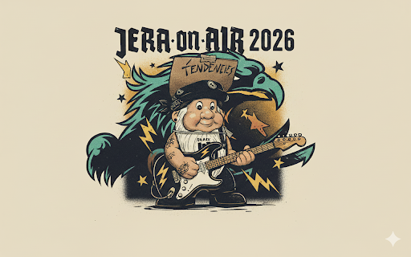

JERA·ON·AIR
2026
Mi ruta personalizada · June 25-27

Inicio
Horario
Mi ruta
Lista rápida
Modo festival
Mapa
Próximo concierto
Solapes principales
Solo marcados
Mi ruta cronológica
Lista rápida
AHORA / SIGUIENTE
Marcar como visto
🗺️ Mapa del festival
Mapa actualizado con la imagen enviada.
¿Dónde voy ahora?
Mostrar/ocultar servicios
🚶 Distancias estimadas entre escenarios